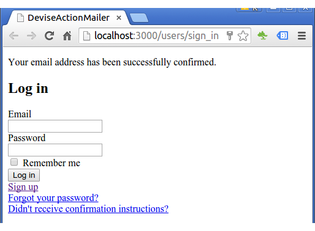

Authentication and sending confirmation email using Devise 2017
In this chapter, we'll learn how to send/receive email to/from our minimal application.
We're going to use Action Mailer with Devise which a popular, full-fledged authentication.
We'll use gmail as a from mail but in next chapter (Rails Heroku Deploy - Authentication and sending confirmation email using Devise), we'll use SENDGRID on Heroku instead.
Source available : Github : Rails4-Devise-Authentication-Confirmation.
Let's create a simple project called "DeviseActionMailer":
$ rails new DeviseActionMailer $ cd DeviseActionMailer
We're using Rails 4.2.5.
We'll make a very simple home (landing) page:
$ rails generate controller welcome index
Open the app/views/welcome/index.html.erb file and delete all of the existing code in the file, and replace it with the following single line of code:
<h1>Hello, Rails!</h1>
Now that we have made the controller and view, we need to tell Rails when we want "Hello, Rails!" to show up. In our case, we want it to show up when we navigate to the root URL of our site, http://localhost:3000.
Open the file config/routes.rb:
get 'welcome/index' root 'welcome#index'
root 'welcome#index' tells Rails to map requests to the root of the application to the welcome controller's index action and get 'welcome/index' tells Rails to map requests to http://localhost:3000/welcome/index to the welcome controller's index action.
We may want to use devise:
gem 'devise'
Then run the bundle command to install it:
$ bundle install
Let's run the following command to generate Devise's configuration file:
$ rails generate devise:install
The generator will install an initializer (config/initializers/devise.rb) which describes all of Devise's configuration options.
In development environments, emails won't be sent by default. We will still be able to see their contents in the console though. To enable sending, we need to add the following line to config/environments/development.rb:
config.action_mailer.perform_deliveries = true
We also need to define default url options for the Devise mailer in our environment file:
config.action_mailer.delivery_method = :smtp
config.action_mailer.default_url_options = { host: 'localhost:3000' }
Open up app/views/layouts/application.html.erb and add the following lines right above <%= yield %>:
<p class="notice"><%= notice %></p> <p class="alert"><%= alert %></p>
We want to create our user model with devise.
We'll use a bundled generator script to create the User model.$ rails generate devise User
The command generates a model with additional columns that are required by Devise. It will also create a models/user.rb model file and a migration (db/migrate/xxx_devise_create_users.rb) that adds all the necessary fields. If the User model already exists, it will be updated.
We need to edit the migration file, so open it up and uncomment the following lines:db/migrations/xxx_devise_create_users.rb. These fields are required for the Confirmable and Lockable modules to operate correctly:
## Confirmable t.string :confirmation_token t.datetime :confirmed_at t.datetime :confirmation_sent_at t.string :unconfirmed_email # Only if using reconfirmable ## Lockable t.integer :failed_attempts, default: 0, null: false # Only if lock strategy is :failed_attempts t.string :unlock_token # Only if unlock strategy is :email or :both t.datetime :locked_at
The code above is the key to send the user a confirmation email and to help when the user locked out.
We may want to switch our db to postgres from sqlite3:
# SQLite version 3.x # gem install sqlite3 # # Ensure the SQLite 3 gem is defined in your Gemfile # gem 'sqlite3' # default: &default; adapter: postgresql pool: 5 timeout: 5000 development: adapter: postgresql encoding: unicode database: DeviseMailer_dev pool: 5 username: postgres password: postgres # Warning: The database defined as "test" will be erased and # re-generated from your development database when you run "rake". # Do not set this db to the same as development or production. test: <<: *default database: DeviseMailer_test production: <<: *default database: DeviseMailer_prod
We need to update Gemfile:
gem 'pg'
Then, install:
$ bundle install
Unlike the default sqlite3 db, we need to create our db:
$ rake db:create
DB migration for DeviseCreateUsers:
$ rake db:migrate
-- create_table(:users)
-- add_index(:users, :email, {:unique=>true})
-- add_index(:users, :reset_password_token, {:unique=>true})
To see what it does, we can check db/migrate/schema.rb:
ActiveRecord::Schema.define(version: 20160126075418) do
create_table "users", force: :cascade do |t|
t.string "email", default: "", null: false
t.string "encrypted_password", default: "", null: false
t.string "reset_password_token"
t.datetime "reset_password_sent_at"
t.datetime "remember_created_at"
t.integer "sign_in_count", default: 0, null: false
t.datetime "current_sign_in_at"
t.datetime "last_sign_in_at"
t.string "current_sign_in_ip"
t.string "last_sign_in_ip"
t.datetime "created_at", null: false
t.datetime "updated_at", null: false
end
add_index "users", ["email"], name: "index_users_on_email", unique: true
add_index "users", ["reset_password_token"], name: "index_users_on_reset_password_token", unique: true
end
Once we migrate, we're ready to go!
Devise will create the Sign up and Login routes and views for us. If we go to http://localhost:3000/users/sign_up, we get "Sign up" page:

If we go to http://localhost:3000/users/sign_in, we get "Log in" page:
When a user lands on our toot page (localhost:3000), our route file (config/routes.rb):
get 'welcome/index'
The welcome/index tells Rails to map requests to http://localhost:3000/welcome/index to the welcome controller's index action. This was created earlier when we ran the controller generator (rails generate controller welcome index).
Instead of a boring landing page, we may want to add some code (app/views/welcome/index.html.erb) which links to Sign Up and Log In pages:
<h1>Hello, Rails!</h1> <% if user_signed_in? %> Logged in as <strong><%= current_user.email %></strong>. <%= link_to 'Edit profile', edit_user_registration_path, :class => 'navbar-link' %> | <%= link_to "Logout", destroy_user_session_path, method: :delete, :class => 'navbar-link' %> <% else %> <%= link_to "Sign up", new_user_registration_path, :class => 'navbar-link' %> | <%= link_to "Login", new_user_session_path, :class => 'navbar-link' %> <% end %>
So, a user who landed on our app will see the following page:
Note that we also added links to "Edit profile" and "Logout" for the users who are already logged in:

If we want to see what routes Devise has been setup for us, we may want to use rake routes command:
$ rake routes
Prefix Verb URI Pattern Controller#Action
new_user_session GET /users/sign_in(.:format) devise/sessions#new
user_session POST /users/sign_in(.:format) devise/sessions#create
destroy_user_session DELETE /users/sign_out(.:format) devise/sessions#destroy
user_password POST /users/password(.:format) devise/passwords#create
new_user_password GET /users/password/new(.:format) devise/passwords#new
edit_user_password GET /users/password/edit(.:format) devise/passwords#edit
PATCH /users/password(.:format) devise/passwords#update
PUT /users/password(.:format) devise/passwords#update
cancel_user_registration GET /users/cancel(.:format) devise/registrations#cancel
user_registration POST /users(.:format) devise/registrations#create
new_user_registration GET /users/sign_up(.:format) devise/registrations#new
edit_user_registration GET /users/edit(.:format) devise/registrations#edit
PATCH /users(.:format) devise/registrations#update
PUT /users(.:format) devise/registrations#update
DELETE /users(.:format) devise/registrations#destroy
user_confirmation POST /users/confirmation(.:format) devise/confirmations#create
new_user_confirmation GET /users/confirmation/new(.:format) devise/confirmations#new
GET /users/confirmation(.:format) devise/confirmations#show
Amazingly, we can see that Devise has set up some user routes and corresponding user views, even though we don't see those views in our views directory.
For example, if we log in, we see a link to edit our profile:

The "Edit profile" link will take us to the /users/edit route, allowing us to edit our devise settings, such as password, or canceling our account:
As show above, the routes we got from rake routes command, we see several routes dedicated to users.
In addition to the routes created by devise, we have new controllers created by Devise: a sessions controller, a passwords controller, a registrations controller and a confirmations controller.
Note that we cannot see these controllers in our controllers directory. At hist point, we have two controllers: application_coltroller and welcome_controller.
Optionally, in the later section, we'll create one more controller for users (app/controller/users_controller.rb).
So far, we're able to make the user to sign-up and login. But we don't check the user's email if it's valid or not. So, we may want to have a confirmation from the user when they sign up.
First, we need to have a setup for sending mails. In this tutorial, we'll use gmail's smtp service.
Let' modify out dev environment (config/environments/development.rb):
config.action_mailer.perform_deliveries = true
config.action_mailer.raise_delivery_errors = true
config.action_mailer.default_url_options = { host: ENV['MAIL_HOST'] }
config.action_mailer.delivery_method = :smtp
config.action_mailer.smtp_settings = {
user_name: ENV['SENDMAIL_USERNAME'],
password: ENV['SENDMAIL_PASSWORD'],
domain: ENV['MAIL_HOST'],
address: 'smtp.gmail.com',
port: '587',
authentication: :plain,
enable_starttls_auto: true
}
I put the three ENV variables to ~/.bashrc:
export SENDMAIL_PASSWORD=password export SENDMAIL_USERNAME=KHongSanFrancisco@gmail.com export MAIL_HOST=localhost:3000
This setup will be used with the :confirmable in models/user.rb regarding the confirmation email to the user.
To make the confirmation to work, we should let Devise know we want the service.
Open up the model file (app/models/user.rb) to see what it contains.
class User < ActiveRecord::Base
# Include default devise modules. Others available are:
# :confirmable, :lockable, :timeoutable and :omniauthable
devise :database_authenticatable, :registerable,
:recoverable, :rememberable, :trackable, :validatable
end
The list shows Devise modules that are active for this model.
Let's add the :confirmable function available to the users:
class User < ActiveRecord::Base
# Include default devise modules. Others available are:
# :lockable, :timeoutable and :omniauthable
devise :database_authenticatable, :registerable,
:recoverable, :rememberable, :trackable, :validatable,
:confirmable
end
Note also that we've done some migration (db/migrate/xxxx_devise_create_users.rb) related to this:
## Confirmable t.string :confirmation_token t.datetime :confirmed_at t.datetime :confirmation_sent_at t.string :unconfirmed_email # Only if using reconfirmable
Now we need to run rails g devise:views to set up the rest of our views:
$ rails g devise:views
This command will set up several views in our views/devise directory:
Now, we can see lots of erb files under views/devise folder. They are related to confirmations, mailer, passwords, registrations, sessions etc. They are the views that have been working for us hidden from us.
Well, actually, all the forms are sitting inside Devise gem. If we want to edit the forms we need to ask Devise to export all templates to our views folder, which we just did using the rails g devise:views command.
Recall we made our own landing page like this:
<%= link_to "Sign up", new_user_registration_path, :class => 'navbar-link' %> | <%= link_to "Login", new_user_session_path, :class => 'navbar-link' %>
When a user click the link to Sign up, it goes to the link url (new_user_registration_path). That takes us to views/devise/registrations/new.html.erb which is the Sign up page:
<h2>Sign up</h2> ...
In the same way, when a user click the link to Log in, it goes to the link url (new_user_registration_path). That takes us to views/devise/sessions/new.html.erb which is the Log in page:
<h2>Log in</h2> ...
Among the 4-links, the "Logout" is unique in that it specifies the method: "delete".
<%= link_to "Logout", destroy_user_session_path, method: :delete, :class => 'navbar-link' %>
So, it's a good opportunity of breaking down how Rails works.
link_to will create the HTML for a link using the information we give.
"Logout" is the first one, and it's just a text that the user sees for the link. It doesn't have any impact on what the link actually does. So, we can use anything for the text, for example, "Get out of here".destroy_user_session_path tells link_to where the browser should be directed upon clicking so that it can put that in the HTML it's going to generate.
But where is destroy_user_session_path actually telling link_to to go, and how?
We didn't create a destroy_user_session_path variable, did we?
Actually, Devise created one for us when it created a User model. So what is this path pointing to?
The command "rake routes" shows us what destroy_user_session_path variable represents:
destroy_user_session DELETE /users/sign_out(.:format)
The method: :delete tells link_to what type of request to add to the HTML link. This is really important, and is probably one of the most common problems people run into once they have Devise up and running.
If we don't specify method: :delete here, then our link_to will probably just end up sending a GET request instead of a DELETE request. As we can see in the results of "rake routes", we don't have anything that responds to destroy_user_session_path variable and GET.
Rails will freak out, and say "I literally do not know what you want me to do, because what you want me to do does not exist."
There are good reasons for why destroy_user_session_path doesn't work with GET, but that's a longer conversation.
This is one of the magics that Rails do for us. I hate it as much as I like it.
(Note) The discussion on method: :delete is from Devise logout link
We could have created the user views directly under app/views folder not within app/views/devise folder using rails generate devise:views users.
$ rails generate devise:views users
In other words, we are now able to customize the views.
Now that we have a dedicated user controller, we can set up corresponding views as we normally would in our views/users directory â index.html.erb, edit.html.erb and show.html.erb.
In connection with our edit view, we probably want to create a partial for the edit form the way a scaffold would. - _form.html.erb.
We can now create a link to our user's profile:
<%= link_to "Profile", current_user %>
which may contain a link to edit the user's attributes:
<%= link_to "Settings", edit_user_path(@user) %>
Note that this will allow the user to edit any attributes we set (i.e., name, age, etc.). This is separate from the user's devise settings which control password reset and account cancellation.
The code of this section is not implemented in this tutorial.
As mentioned in previous section, now we want to create a users controller and corresponding user views. To do that we need to run rails g controller users.
This will create a users_controller.rb in our controllers directory, and will allow us to set up additional routes for our user model.
$ rails g controller users ... create app/controllers/users_controller.rb ...
The command will give us this (controllers/users_controller.rb):
class UsersController < ApplicationController end
Since devise handles create and other aspects of users, we don't want to create routes for these things. However, we may want to create routes for index, edit, show and update.
class UsersController < ApplicationController
before_action :set_user, only: [:show, :edit, :update] # probably want to keep using this
# GET /users
# GET /users.json
def index
@users = User.all
end
# # GET /users/1
# # GET /users/1.json
def show
end
# GET /users/1/edit
def edit
end
# # PATCH/PUT /users/1
# # PATCH/PUT /users/1.json
def update
respond_to do |format|
if @user.update(user_params)
format.html { redirect_to @user, notice: 'User was successfully updated.' }
format.json { render :show, status: :ok, location: @user }
else
format.html { render :edit }
format.json { render json: @user.errors, status: :unprocessable_entity }
end
end
end
private
# Use callbacks to share common setup or constraints between actions.
def set_user
@user = User.find(params[:id])
end
# Never trust parameters from the scary internet, only allow the white list through.
def user_params
params.require(:user).permit(:role, :user_name)
end
end
Here is the sign up page:
At the click on "Sign up" button, we get the following message:
From the console output, we can see the confirmation is in action, and the message requesting confirmation has been sent:
Devise::Mailer#confirmation_instructions: processed outbound mail in 707.2ms Sent mail to pygoogle@aol.com (1571.4ms) Date: Tue, 26 Jan 2016 13:11:11 -0800 From: please-change-me-at-config-initializers-devise@example.com Reply-To: please-change-me-at-config-initializers-devise@example.com To: pygoogle@aol.com Message-ID: <56a7e0ef38690_624a3f9500003488836bc@laptop.mail> Subject: Confirmation instructions Mime-Version: 1.0 Content-Type: text/html; charset=UTF-8 Content-Transfer-Encoding: 7bit <p>Welcome pygoogle@aol.com!</p> <p>You can confirm your account email through the link below:</p> <p><a href="http://localhost:3000/users/confirmation?confirmation_token=u6jLCVtWbqcWTrN8mFW3">Confirm my account</a></p>
We can check actually we get the email:
If we click the provided link, it leads us to the sign-in page:
To add some fields to the Devise's user model, please visit Adding custom fields to Devise User model and Customization.
Please visit Rails Heroku Deploy - Authentication and sending confirmation email using Devise.
Source available : Github : Rails4-Devise-Authentication-Confirmation.
Ruby on Rails
- Ruby On Rails Home
- Ruby - Input/Output, Objects, Load
- Ruby - Condition (if), Operators (comparison/logical) & case statement
- Ruby - loop, while, until, for, each, (..)
- Ruby - Functions
- Ruby - Exceptions (raise/rescue)
- Ruby - Strings (single quote vs double quote, multiline string - EOM, concatenation, substring, include, index, strip, justification, chop, chomp, split)
- Ruby - Class and Instance Variables
- Ruby - Class and Instance Variables II
- Ruby - Modules
- Ruby - Iterator : each
- Ruby - Symbols (:)
- Ruby - Hashes (aka associative arrays, maps, or dictionaries)
- Ruby - Arrays
- Ruby - Enumerables
- Ruby - Filess
- Ruby - code blocks and yield
- Rails - Embedded Ruby (ERb) and Rails html
- Rails - Partial template
- Rails - HTML Helpers (link_to, imag_tag, and form_for)
- Layouts and Rendering I - yield, content_for, content_for?
- Layouts and Rendering II - asset tag helpers, stylesheet_link_tag, javascript_include_tag
- Rails Project
- Rails - Hello World
- Rails - MVC and ActionController
- Rails - Parameters (hash, array, JSON, routing, and strong parameter)
- Filters and controller actions - before_action, skip_before_action
- The simplest app - Rails default page on a Shared Host
- Redmine Install on a Shared Host
- Git and BitBucket
- Deploying Rails 4 to Heroku
- Scaffold: A quickest way of building a blog with posts and comments
- Databases and migration
- Active Record
- Microblog 1
- Microblog 2
- Microblog 3 (Users resource)
- Microblog 4 (Microposts resource I)
- Microblog 5 (Microposts resource II)
- Simple_app I - rails html pages
- Simple_app II - TDD (Home/Help page)
- Simple_app III - TDD (About page)
- Simple_app IV - TDD (Dynamic Pages)
- Simple_app V - TDD (Dynamic Pages - Embedded Ruby)
- Simple_app VI - TDD (Dynamic Pages - Embedded Ruby, Layouts)
- App : Facebook and Twitter Authentication using Omniauth oauth2
- Authentication and sending confirmation email using Devise
- Adding custom fields to Devise User model and Customization
- Devise Customization 2. views/users
- Rails Heroku Deploy - Authentication and sending confirmation email using Devise
- Deploying a Rails 4 app on CentOS 7 production server with Apache and Passenger I
- Deploying a Rails 4 app on CentOS 7 production server with Apache and Passenger II
- OOPS! Deploying a Rails 4 app on CentOS 7 production server with Apache and Passenger (Trouble shooting)
Ph.D. / Golden Gate Ave, San Francisco / Seoul National Univ / Carnegie Mellon / UC Berkeley / DevOps / Deep Learning / Visualization